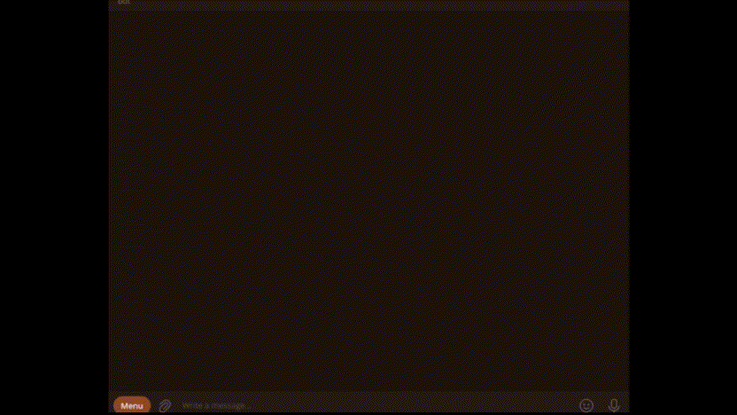
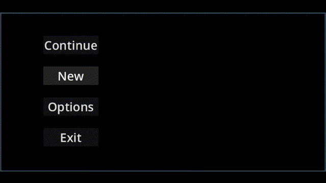

Software developer passionate about automation, data-driven tools, and interactive experiences.
Experience developing bots using Python, user interfaces and games using Godot, database management (initially with Excel files, now migrating to SQL), and external APIs.

A Telegram bot that lists products, gives prices, and calculates totals while notifying a specific group based on an ID. It stores the running total to add new orders incrementally.

2D side-scrolling narrative game built with a focus on story delivery through animation and transitions. The project implements a modular text system that reads dialogue and story content from external text files.